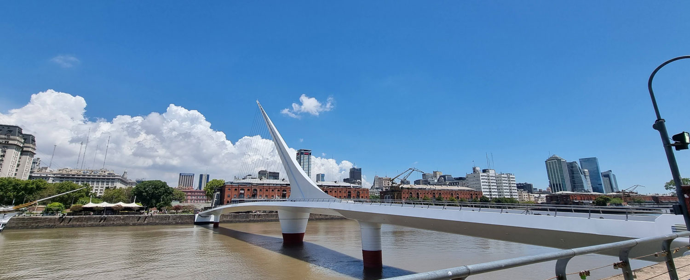
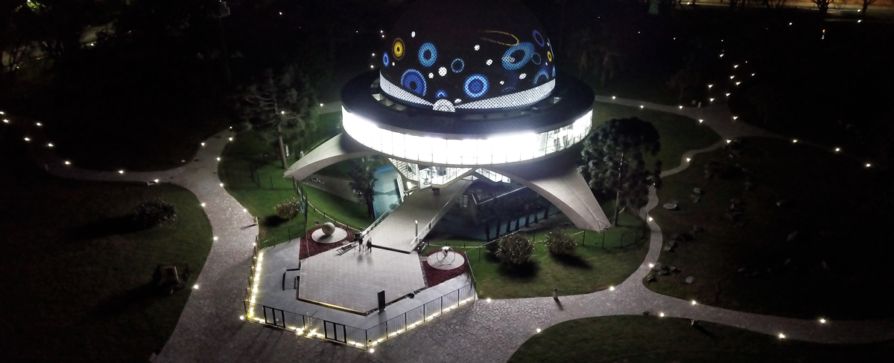

CONOCÉ LA #CIUDAD COMO NADIE

El Ateneo Grand Splendid
Conocé la historia de una de las librerias mas hermosas del mundo

El Cabildo
Visitá el corazón de la revolucion de 1810: la sede de la administracion colonial, ocupa el mismo lugar desde 1580 y es un emblema de historia viva

Puente de la Mujer
Ubicado en Puerto Madero, representa la imagen de una pareja que baila el tango y es todo un emblema de la Ciudad.

La Bombonera
Un lugar en el que el futbol y la pasion se viven con una intensidad dificil de comparar.

Planetario Galileo Galilei
Completamente renovado, el planetario es uno de los atractivos imperdibles de la ciudad